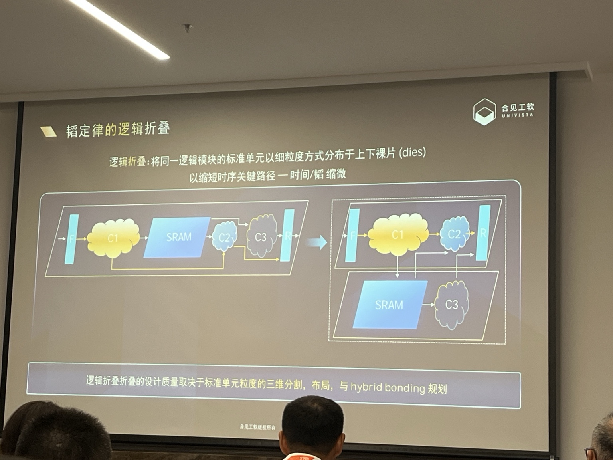
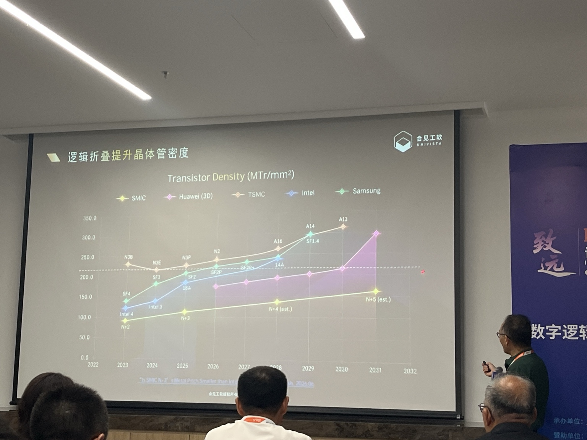
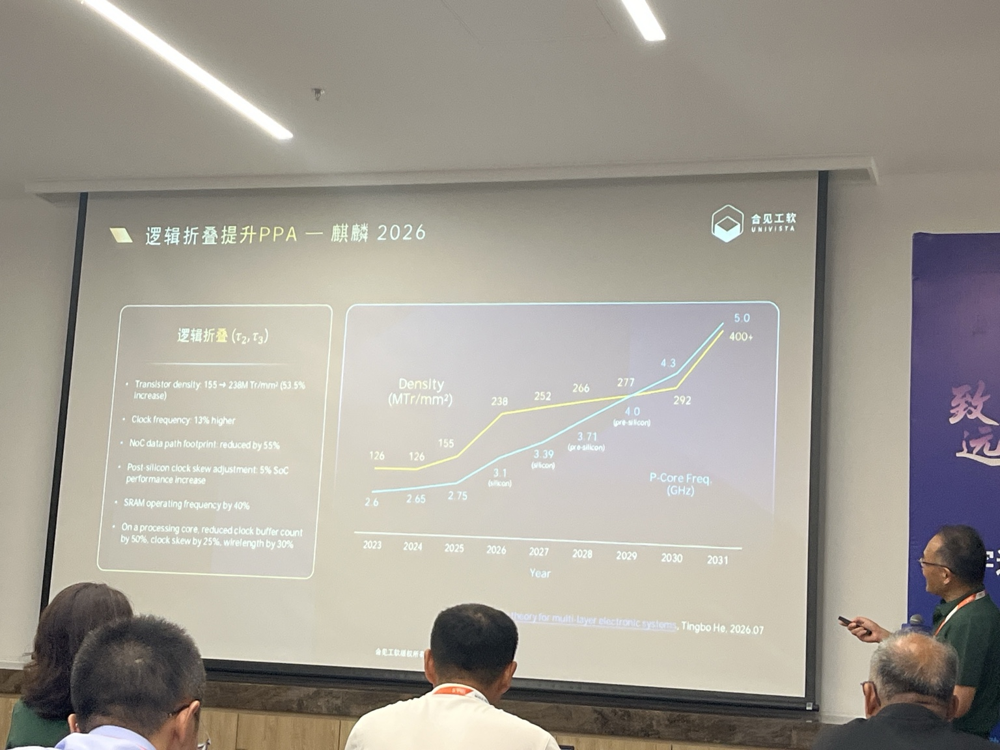
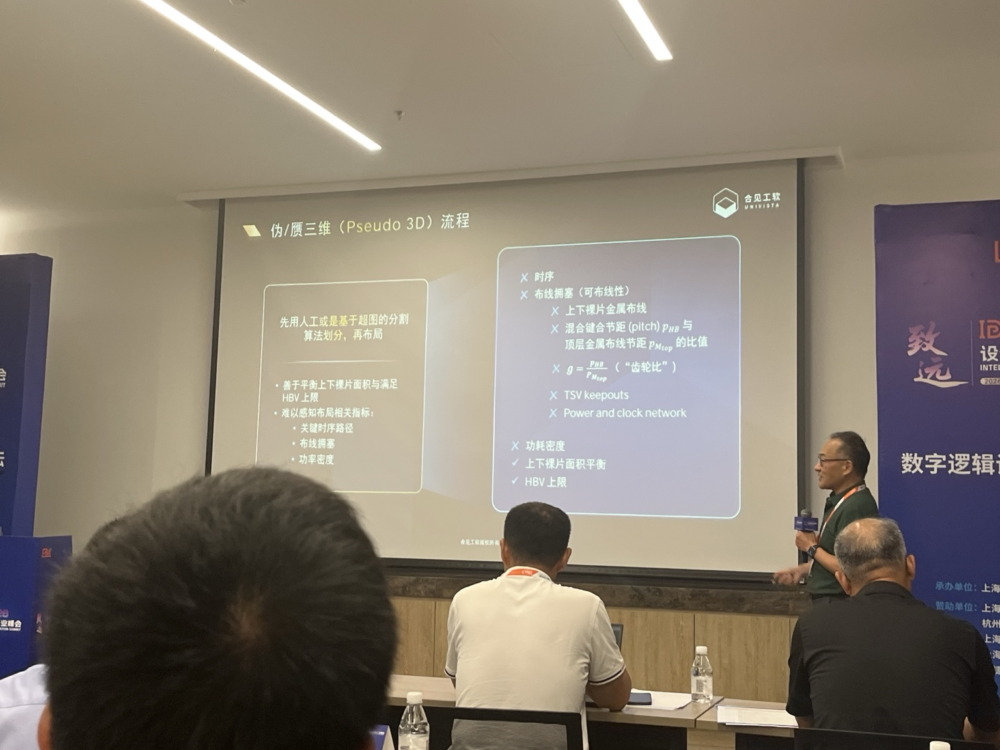
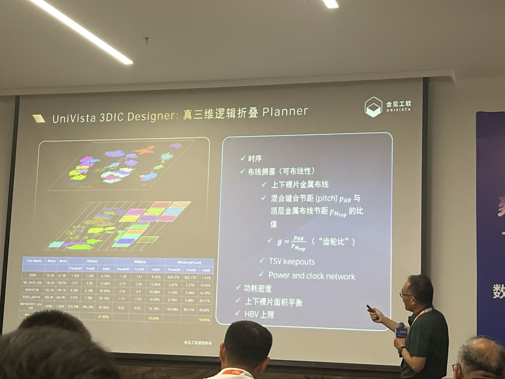
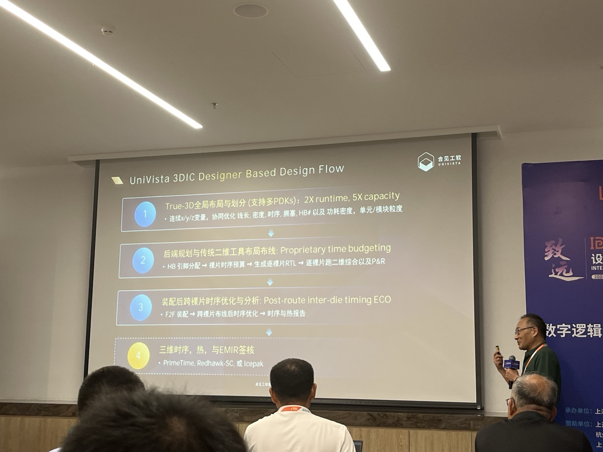
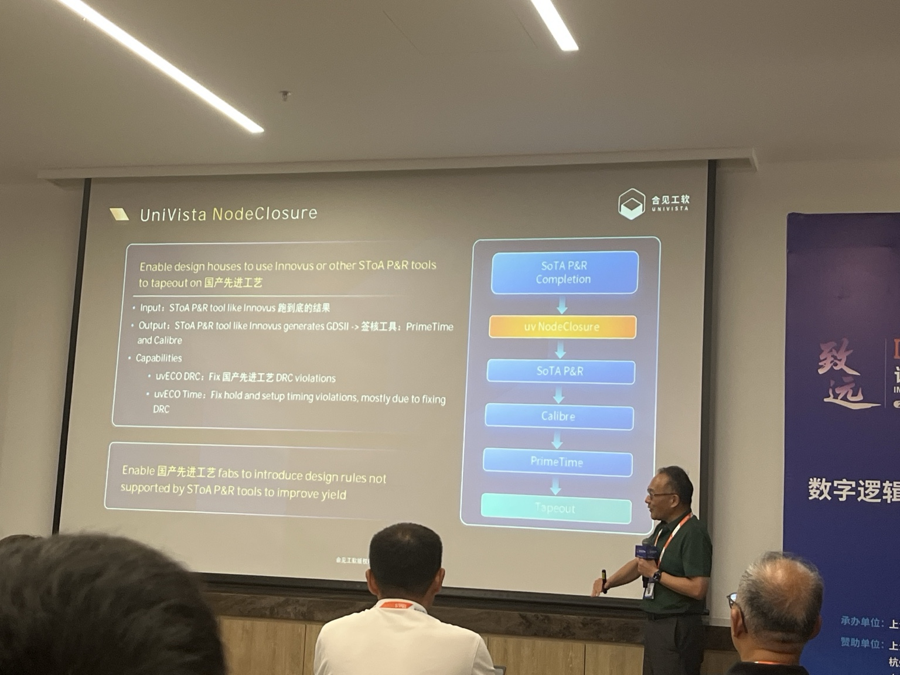
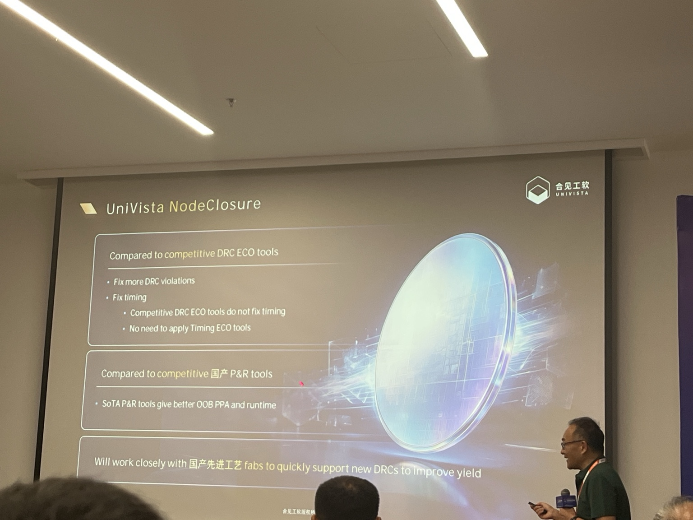
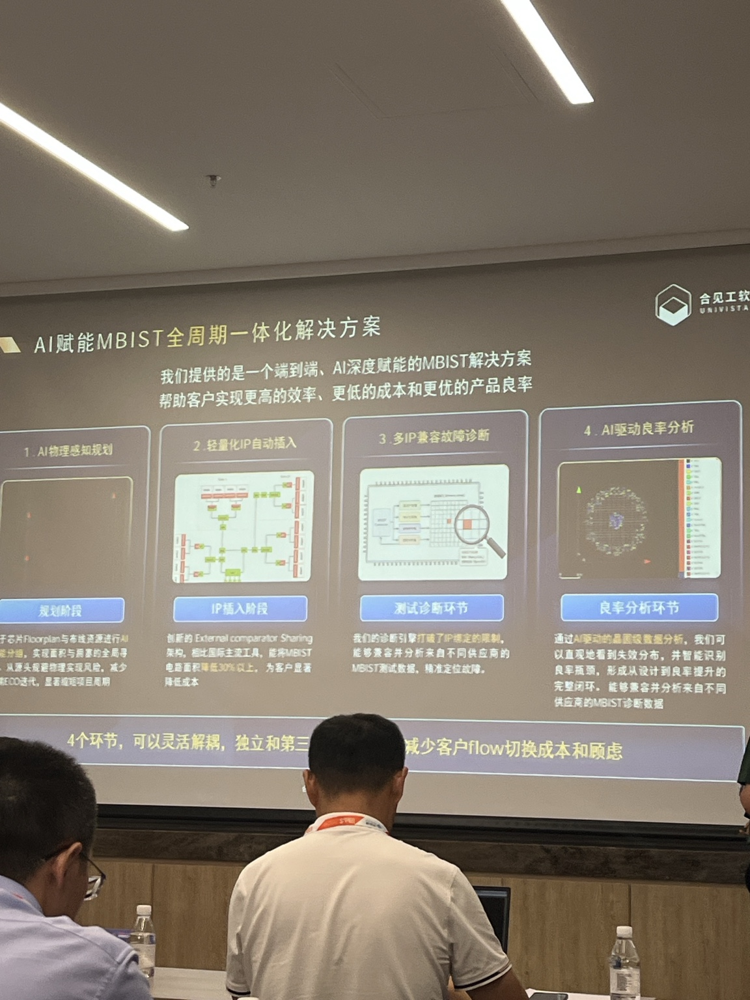

EDA / 3D IC
IDAS 参会：
逻辑折叠与三维芯片设计

合见工软相关演讲 · 图文纪要。根据现场录音转写与演示文稿照片整理。
一、核心结论
这场报告的核心不是“做一套新的完整 P&R”，而是围绕国产先进工艺受限背景，提出两条互补路线：第一，用逻辑折叠把原本二维的逻辑在标准单元/模块粒度分配到上下裸片，通过 Hybrid Bonding 形成原生 3D 设计，以提升有效晶体管密度并缩短关键互连；第二，用 NodeClosure 补齐国际主流 P&R 对国产先进工艺特殊 DRC/DFM 规则支持不足的问题，并同时处理 DRC 修复引起的 timing regression。
| 主题 | 要解决的问题 | 报告给出的路径 |
|---|---|---|
| 逻辑折叠 | 二维制程继续缩微困难，晶体管密度与性能提升受限 | 2D → 上下逻辑裸片；标准单元级 3D partition / placement；Hybrid Bonding |
| True-3D EDA | 先分割再布局的 Pseudo-3D 无法准确感知互连、时序、拥塞和功耗密度 | 直接做 True-3D placement，联合优化 x/y/z、timing、routing、HB、power 等 |
| 工程落地 | 3D 优化结果仍需接入成熟综合、P&R、sign-off flow | 3D Planner → 裸片 time budgeting → 各 die 2D P&R → inter-die ECO → sign-off |
| NodeClosure | 主流 P&R 对国产先进工艺新增规则支持不及时或不完整 | 沿用 SoTA P&R，在 tapeout 前修特殊 DRC，并同步修复 setup/hold |
二、为什么要做逻辑折叠
报告的出发点是：在先进制程受到设备与工艺条件约束时，仅依赖二维晶体管缩微继续提高密度越来越困难。演讲者明确提到国产工艺仍需要依赖 DUV，并以国产节点演进曲线与海外先进节点作比较；粉色路线则是假设在国产工艺节点上引入逻辑折叠后的“有效晶体管密度”。

录音要点（约 04:45–05:40）：黄色线表示国产工艺节点演进；粉红线表示假定在 SMIC 工艺节点上采用逻辑折叠后可达到的晶体管密度。报告人的论点是，到 2030 年左右，逻辑折叠有机会在有效密度上接近或超过若干海外先进节点。
注意：图中的横向虚线，录音并未明确称为“EUV apply line”。录音只明确给出了 DUV 的背景和 2030 年横向比较的叙事，因此不宜把该虚线直接解释为行业统一的 EUV 分界。

报告引用的逻辑折叠收益包括：晶体管密度提升约 53.5%、时钟频率提升、NoC 数据通路 footprint 降低、SRAM 频率提升，以及 clock buffer / skew / wirelength 改善。这里的关键不是“晶体管本身变小”，而是通过三维空间提高单位二维 footprint 上承载的有效逻辑量，并借助更短的互连获得性能收益。
三、逻辑折叠到底是什么
报告给出的例子中，原本 F、C1、SRAM、C2、C3、R 全部位于一个二维 die。逻辑折叠后，一部分逻辑与 SRAM 被移动到另一张裸片。关键路径上的模块可以通过上下层相对位置重新安排，使原本较长的水平互连显著缩短。
性能收益的本质：先进芯片中 interconnect delay 已是重要延迟来源。若关键路径上的长线被压缩为更短的平面互连或合适的跨层连接，RC delay 可以下降。
代价：并非所有跨层连接都更快。某些非关键路径会经过 Hybrid Bond，并穿越上下裸片的多层金属，因此跨 die 连接本身有成本。好的 3D 设计要把“值得跨层”的连接和“不值得跨层”的连接分清楚。
四、真正困难的是：怎么分、怎么摆、怎么连
演讲者反复强调，逻辑折叠的设计质量取决于三件事：标准单元/模块如何划分到上下裸片、划分后的 placement，以及哪些信号通过哪些 Hybrid Bond。需要同时考虑 timing、routing congestion、功耗密度、thermal、上下裸片面积平衡以及 Hybrid Bond 数量上限。
“齿轮比”是报告中特别强调的物理约束：Hybrid Bond pitch 与顶层金属 routing pitch 的比值。齿轮比越大，信号为了找到可用的 Hybrid Bond terminal 可能需要横向跨越更多 routing tracks，从而消耗布线资源并增加拥塞。
五、Pseudo-3D 为什么不够

传统或学术界常见做法是先用人工或 hypergraph partition 把设计分成上下 die，再分别布局。这种方法容易控制“上下 die 面积平衡”和“Hybrid Bond 数量上限”，但在分割发生时还没有真实 placement，因此无法准确估计 interconnect。
这会直接削弱对关键时序、routing congestion、功耗密度、上下裸片金属资源、HB pitch、TSV keepout、power/clock network 等约束的感知。换句话说：Pseudo-3D 的根本问题是“先做了 Z 方向决策，后面才知道 X/Y 位置”，而很多 3D 代价只有在 X/Y/Z 一起确定时才能算准。
六、True-3D Planner：不先分割，直接做三维 placement

合见工软给出的核心方法是：不先做固定 partition，而是直接通过 analytical placement 在三维空间中优化。也就是在 placement 阶段同时决定 cell/module 的 x、y、z，并把多个目标放进同一个优化过程。
联合考虑的约束包括：时序、可布线性/拥塞、上下裸片金属布线、Hybrid Bond pitch 与“齿轮比”、TSV keepout、power/clock network、功耗密度、上下裸片面积平衡、HB 数量上限。
录音中给出的实验口径显示，True-3D 相比伪三维在 TNS 等 timing 指标和 wirelength 等指标上有明显改善；现场转写中的具体百分比受语音识别影响，宜以正式 benchmark 数据为准。
七、从算法到 Tapeout：如何接入现有 EDA Flow

- True-3D 全局布局与划分：支持多 PDK；联合优化 x/y/z、线长、密度、时序、拥塞、HB 与功耗密度，并支持单元/模块粒度的布局与划分。
- Hybrid Bond 分配与 Time Budgeting：True-3D placement 已知 driver/sink 的空间位置，可据此决定跨 die 信号如何连接、Hybrid Bond 放在哪里；随后对上下裸片做 timing budget，生成各自约束。
- 分别回到成熟 2D 工具完成综合和 P&R：为上下裸片生成各自 RTL/约束，再调用成熟综合与 P&R 工具完成各 die 的物理实现。
- 装配后的 Inter-die Timing ECO：因为前期 time budgeting 不可能完全准确，两张 die 装配后重新做跨 die timing 分析，对预算误差导致的 violation 做 post-route ECO。
- 第三方 Sign-off：最终可接 PrimeTime、RedHawk-SC、Icepak 等工具完成三维时序、EM/IR、thermal 等签核。
产品策略值得注意：3DIC Designer 并不试图重造整个 synthesis/P&R/sign-off 生态，而是做上层的 3D partition / placement / budgeting / inter-die optimization，再把每个 die 交给成熟 2D EDA。这是一条“上层新优化器 + 下层成熟 solver”的务实路线。
八、NodeClosure：国产先进工艺的“最后一公里”

报告后半部分切换到 NodeClosure。其出发点是：客户仍希望使用 Innovus 等 SoTA P&R 工具获得较好的 out-of-box PPA 和 runtime，但某些国产先进工艺——报告特别提到 SAQP 等场景——的特殊 DRC、DFM/功能性/参数化规则，主流 P&R 未必能及时理解和自动修复。
NodeClosure 插在主 P&R 完成之后：读取已有结果，修复主流工具不支持或不会修的 DRC；若 DRC ECO 引起 timing degradation，再同步处理 setup/hold。之后仍回到成熟工具生成 GDSII，并使用 Calibre / PrimeTime 等做 sign-off。

它的差异化不是“国产 P&R 替代 Innovus”，而是：SoTA P&R + NodeClosure。演讲者甚至明确承认顶级 P&R 的 OOB PPA / runtime 更好，因此选择在成熟 flow 后补齐国产先进工艺特有规则，并与国内 fab 紧密合作，让新增的 DFM DRC、功能性 DRC、Parametric DRC 能更快进入设计闭环。
九、与前半段 AI + MBIST 的关系

录音开头还介绍了 AI 赋能 MBIST 的全周期方案：AI 辅助 MBIST grouping/规划；通过 External Comparator Sharing 等架构降低面积；诊断引擎兼容不同 MBIST IP；再用 AI 对 fail 分布和良率 bottleneck 做分析。它与后面的 3DIC/NodeClosure 虽属不同产品线，但共同体现了合见工软的产品思路：不只做单点算法，而是围绕现有芯片研发 flow 的瓶颈做自动化与优化闭环。
十、我认为最值得继续追问的技术点
- True-3D analytical placement 的目标函数具体如何定义？timing、wirelength、congestion、power density、HB cost 之间如何动态加权？
- Hybrid Bond 的分配是 placement 同时优化，还是 placement 后二阶段优化？“齿轮比”进入 cost function 的方式是什么？
- 上下 die 使用不同 PDK 时，跨 die timing / RC / clock / power model 如何统一？
- 报告中的 True-3D vs Pseudo-3D benchmark：design size、工艺、HB pitch、baseline 和 sign-off 条件分别是什么？
- NodeClosure 对新增 DRC 的支持方式：需要工程师手写 repair pattern，还是可以从规则/violation 自动生成 repair strategy？
- DRC 与 timing 是顺序式 repair，还是在同一个 optimization loop 中联合 closure？